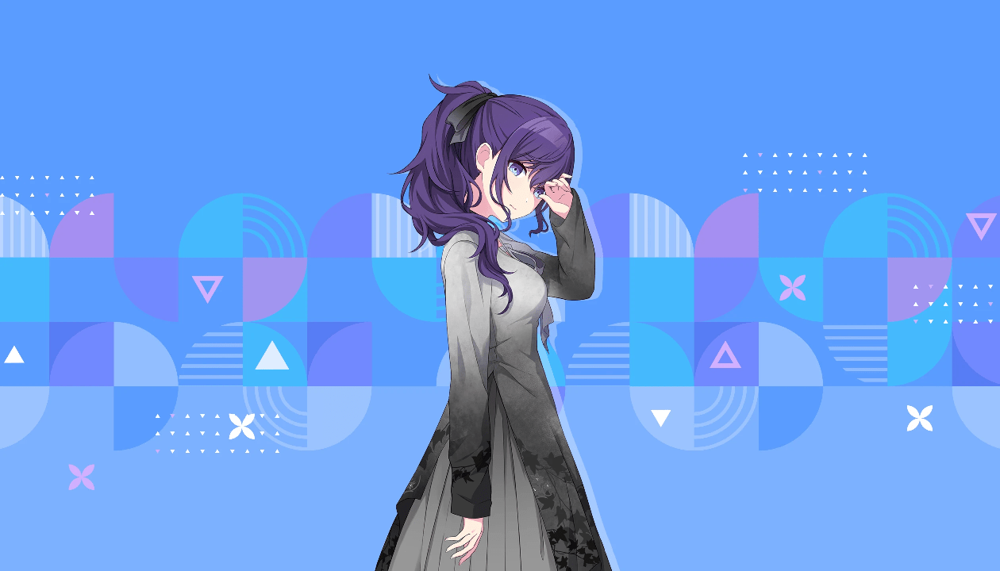
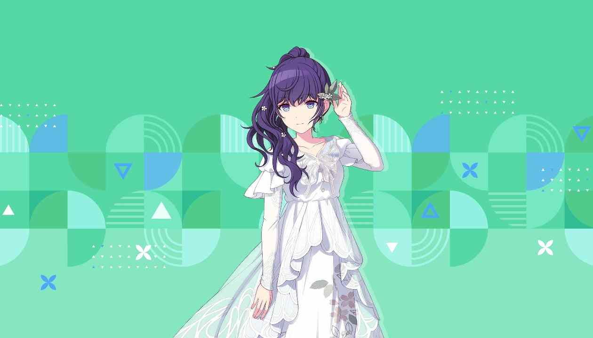
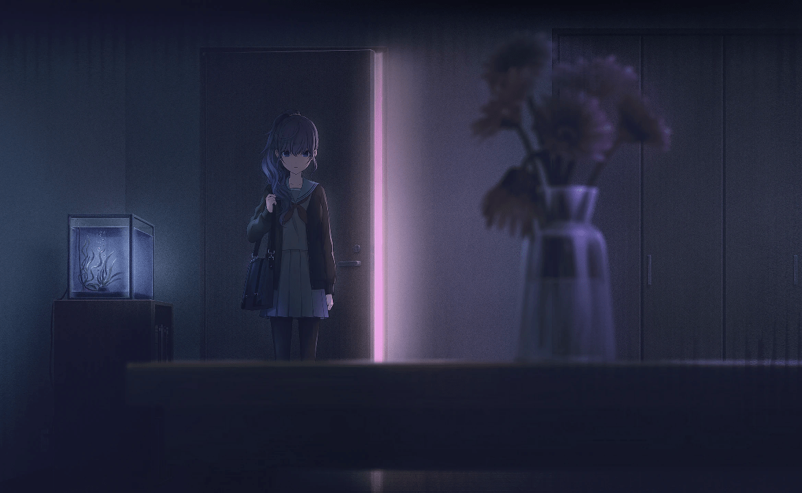
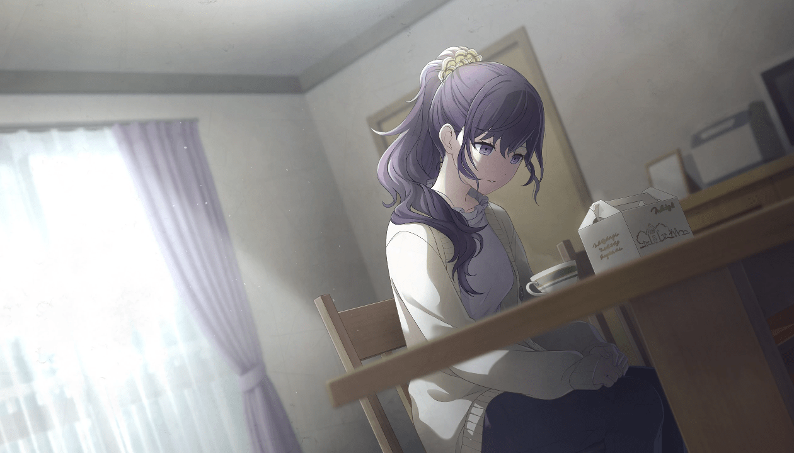
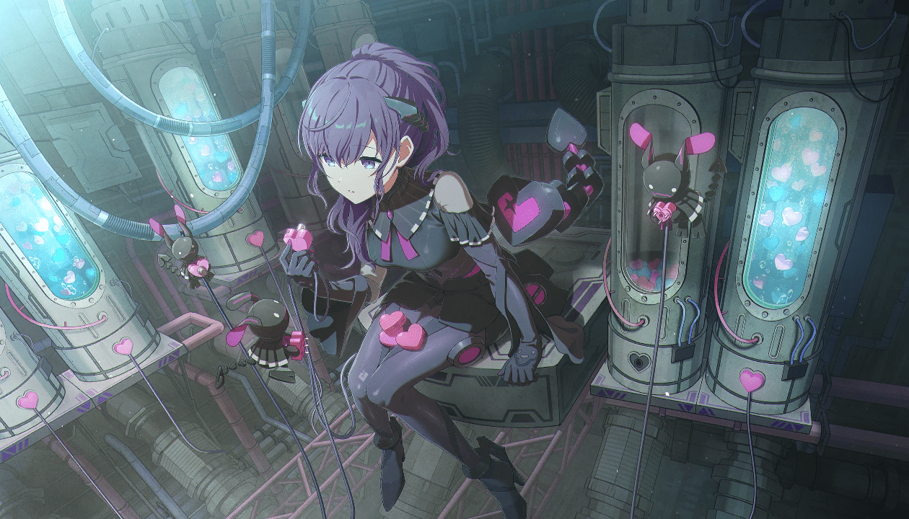

初始卡面
营业微笑

新旧队服
温良学姐黑脸中

其他二星
多图卡片，点击查看全部
我是“好孩子”
主线三星
拘束的化妆舞会
人偶（mfy1箱）
欢快的两人三足？
运动混
向你抛出的言语
无限灰
探寻我的内心深处
图书馆（cfes限定）
微绽的笑容
奏明（无服装 假四星）
温暖与爱的记忆
苹果（mfy2箱）
在初雪中
初雪（限定）
绝望之底的厄比斯
绝望底
回想起的色彩
流浪者
在夕阳余温中
bug（mfy3箱）
遥远的温度
睡衣
温柔的咒语
黑百合（限定）
气氛略异的餐桌
原宿
只有你知道的寂静
弓道

逐渐被断绝的路
kitty（限定）
休息时间
百鬼
真正的想法
演剧（mfy4箱）
被拾起的“心”
水底（25wl1）

吐露的真心
情热
前往更远一点的地方
新年混
泡沫中的安宁
骑士（白情 限定）
安静地准备
我是雨
温暖的手
紫化（mfy5箱）
意想不到的双人票
水族馆
猫耳妖怪的引路人
护士（限定）
品尝正宗的烤鱿鱼
鱿鱼
在静谧的图书馆中
情人节（限定）
寂静的厨房
天蛾
温暖的时光
虚无（mfy6箱 限定）
重叠的笑容
25wl2（wl2限定）

拾起的回忆
VR混

生日卡
0127 生日限定
💬 评论